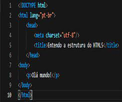

Desevolvimento Web
Desenvolvimento web é o termo utilizado para descrever o desenvolvimento de sites, na Internet ou numa intranet.
O profissional que trabalha desenvolvendo websites pode ser um web designer ou um web developer.
-HTML
-CSS
-JS
O que é HTML?
HTML é a linguagem de marcação padrão para a criação de páginas da Web.
- HTML significa linguagem de marcação de hipertexto
- HTML é a linguagem de marcação padrão para criação de páginas da Web
- HTML descreve a estrutura de uma página da Web
- HTML consiste em uma série de elementos
- Os elementos HTML informam ao navegador como exibir o conteúdo
- Os elementos HTML rotulam partes do conteúdo como “este é um título”, “este é um parágrafo”, “este é um link”, etc.

O que é CSS
CSS é a linguagem que usamos para estilizar uma página da Web.
- CSS significa Folhas de Estilo em Cascata
- CSS descreve como os elementos HTML devem ser exibidos na tela, no papel ou em outras mídias
- CSS descreve como os elementos HTML devem ser exibidos na tela, no papel ou em outras mídias
- Folhas de estilo externas são armazenadas em arquivos CSS
O que é JS
Tecnologias
- Html
- Css
- Js
- PHP
- Java
- Python